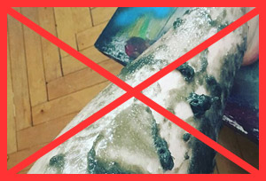
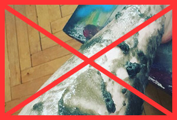

Adriano, 34 anni
Una volta ho scommesso con mia moglie per un desiderio, e ho perso. La moglie ha mostrato capacita inventivi, dice vai a fare depilazione sul viso. Mi ha dato un Epilage, si ha messa ad oservarmi, prendendomi in giro. Cosa dovevo fare, il desiderio deve essere soddisfatto. Ho messo questa ceretta sulla faccia, dopo 15 secondi tocco ed era già asciutta. Chiedo, allora cosa devo fare? E lei dice: adesso tira! Strizzò gli occhi, urlò e tirò, stranamente ma non mi ha fato male. I baffi con la barba non crescono da una settimana. Ora capisco perché le donne scelgono questo prodotto :)

Carlo, 27 anni
Non avrei mai pensato che avrei usato uno strumento di rimozione dei capelli invece di un rasoio. L'effetto è migliore, ed è più economico, ora mi depilo una volta ogni tre settimane, mentre con il rasoio dovevo radermi ogni mattina. E bene, se la barba crescesse normalmente ma no, la natura mi ha premiato con capelli sottili che spuntavano in direzioni diverse. In generale, Epilage è una cosa interessante. Lo fai una volta e per tre settimane ti dimentichi della barba.

Francesco, 31 anni
E chi ha detto che solo le donne dovrebbero usare la cera per la depilazione? Penso che gli uomini mi capiranno perfettamente, sopratutto quelli che si radono al mattino, e la serra lo devono rifare. Con Epilage puoi dimenticare la rasatura per quasi un mese! E per questo basta una sola procedura. Inoltre, nessuna irritazione della pelle, pura convenienza e risparmio. Raccomando al 100%!


 
